Ink that stays
40 pieces tattooed in the studio. Hover to pause the wall and tap any photo for a closer look.
Find your style
Each card cycles through the work in one style. Tap it to filter the gallery.
All the pieces
Filter by style and open any photo. In the enlarged view, tap it again to see the detail of the lines and shading.


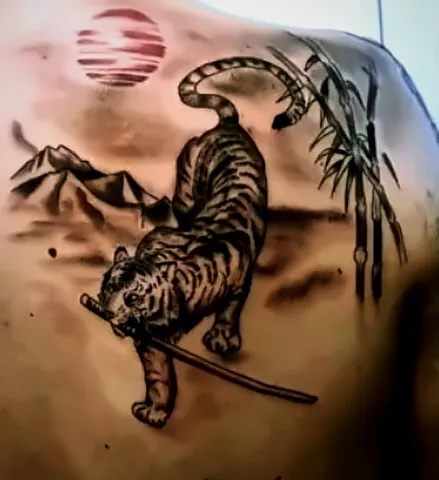

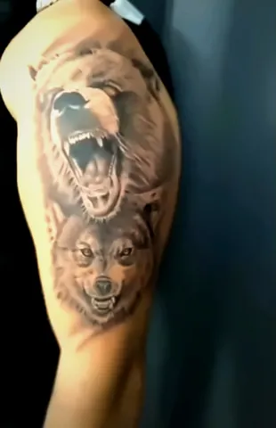


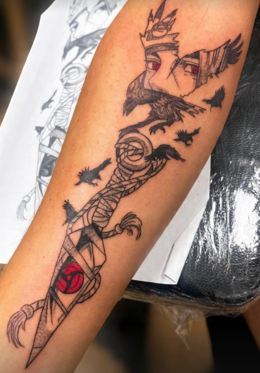
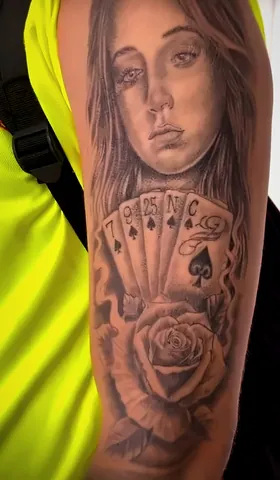
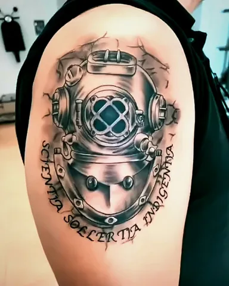


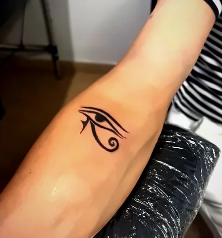
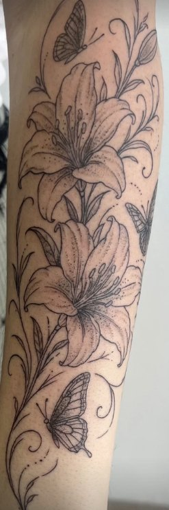


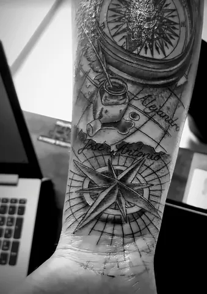
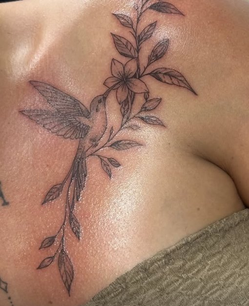
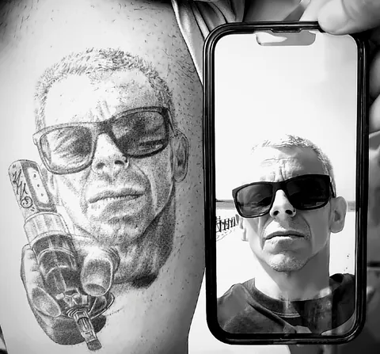


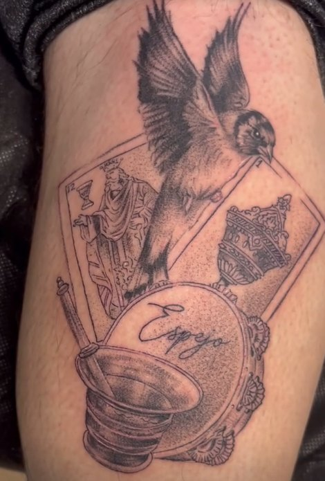
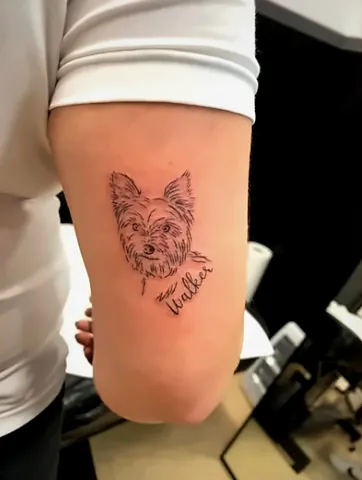
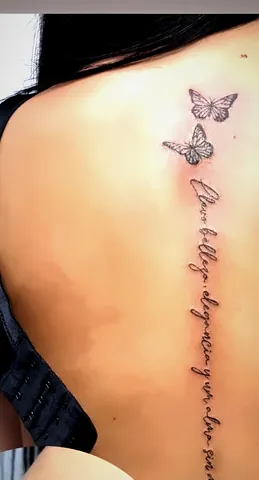
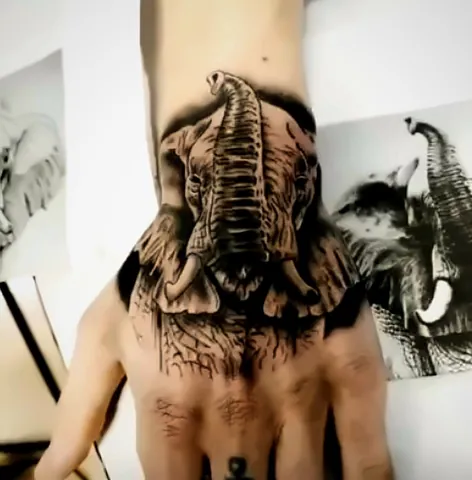


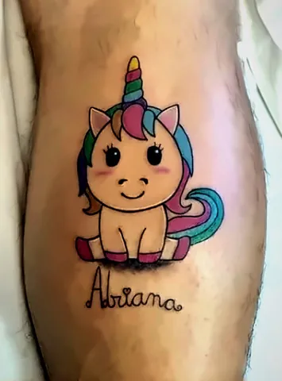
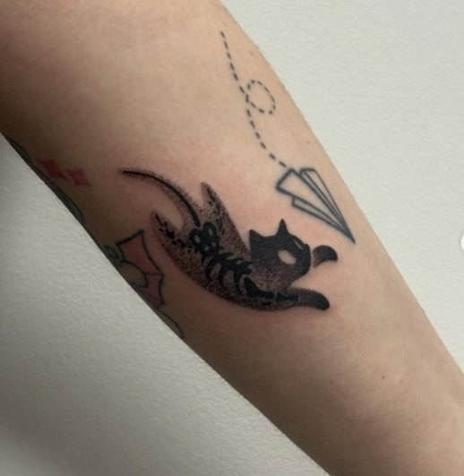
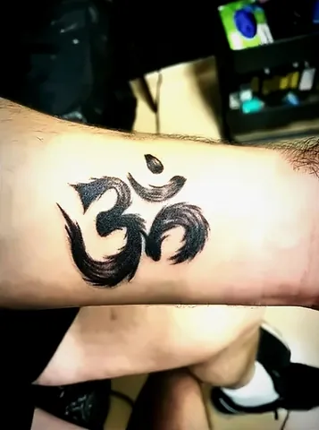


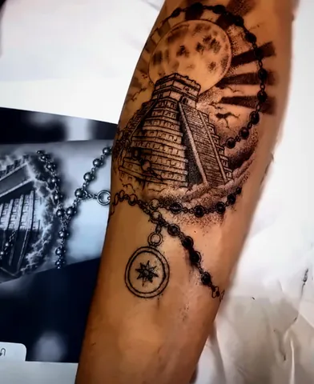

A portfolio made in the studio
Every photo on this page is a real tattoo done at Ludus Kraken, our tattoo studio in the centre of Estepona. You will find black and grey realism, portraits, dotwork, fine line, lettering and colour pieces, from small details to full sleeves and back pieces.
Each design is drawn for the person who wears it, so you will never see two identical pieces. If one inspires you, save it and send us the photo as a reference: we will adapt it to your idea, the placement and the size you have in mind. We welcome clients from Estepona, Marbella, San Pedro Alcántara, Manilva and Casares, always by appointment.